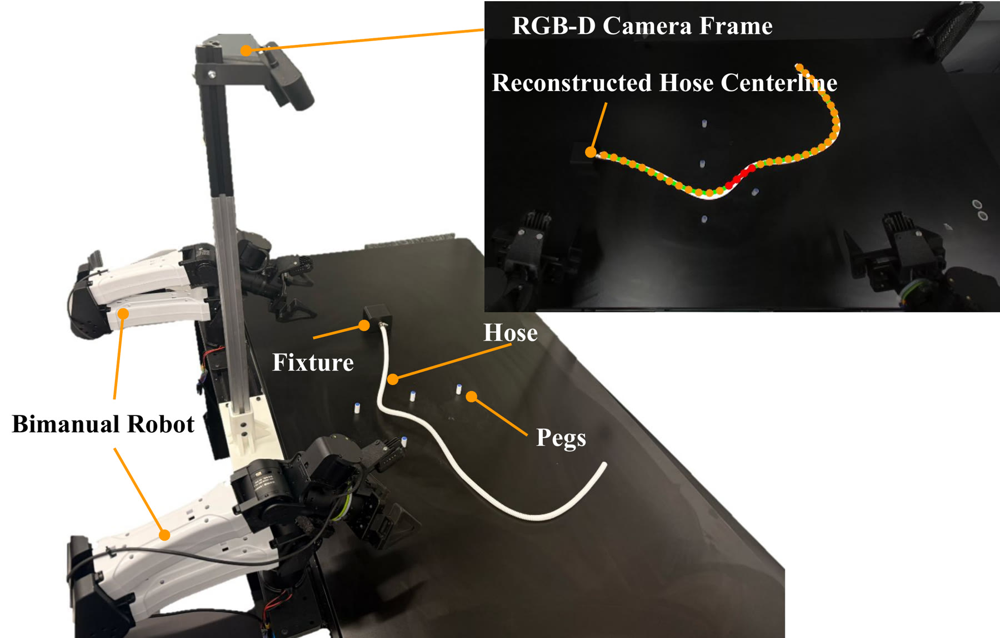
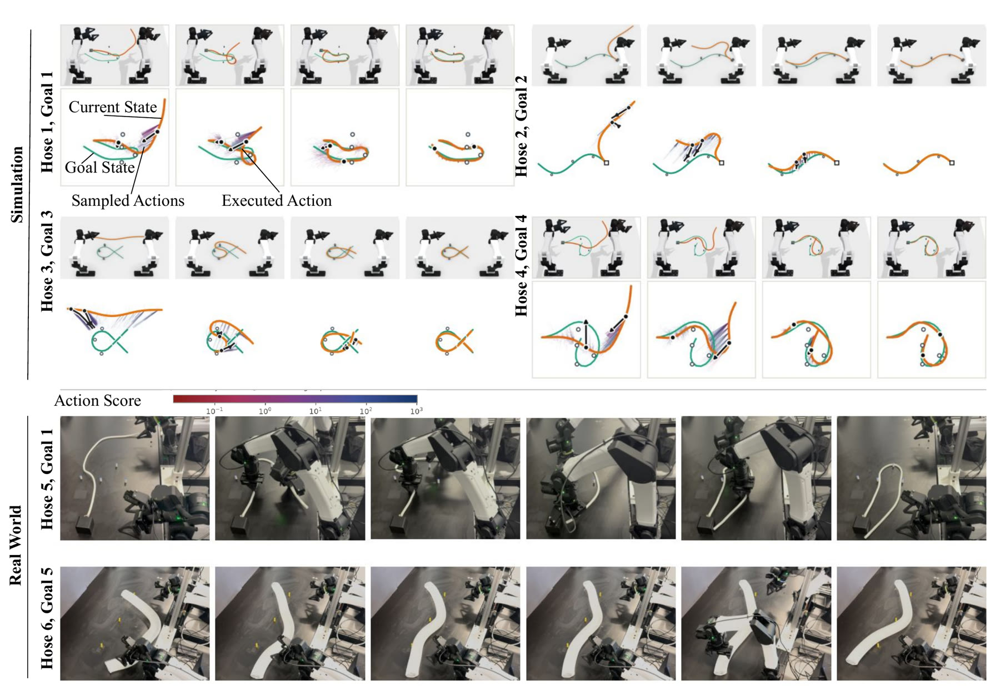

Real-World Routing

Two YAM arms manipulate a hose around board pegs. A calibrated RGB-D camera reconstructs the ordered hose centerline with a modified TrackDLO pipeline after every synchronous bimanual action; one hose end stays fixed. The physical goals are a real-world instantiation of G1 on the measured pegs of the board and a hardware-specific goal (G5). An episode succeeds only when the goal geometry and every peg-side and crossing constraint hold on all five observations after the grippers release.
Physical runs
Videos, left half: the run rebuilt in Blender from its own log — candidate moves as ghost arms coloured by MPPI cost (green = low), the chosen plan and its forecast in magenta. Right half: the overhead camera, unedited and synchronised.
Routing progression

Simulation views and candidate-action panels (top) and real-world rollout frames (bottom) over successive interactions.